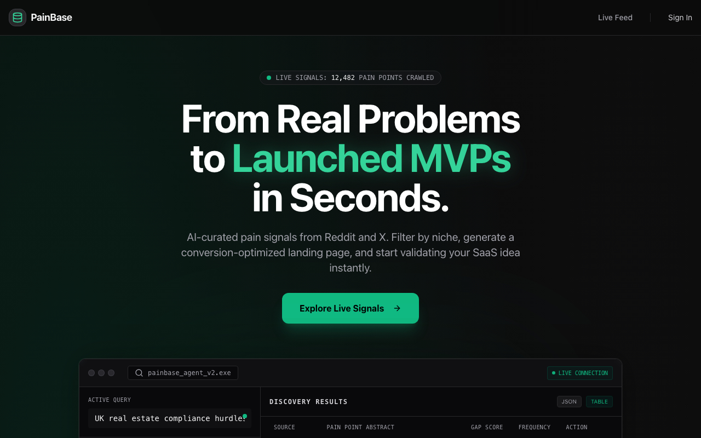
Elena understands the promise quickly: AI-curated Reddit/X pain signals plus one-click landing page generation. Her question is not whether the demo is attractive, but whether the workflow can scale to repeated studio screening across multiple founders.
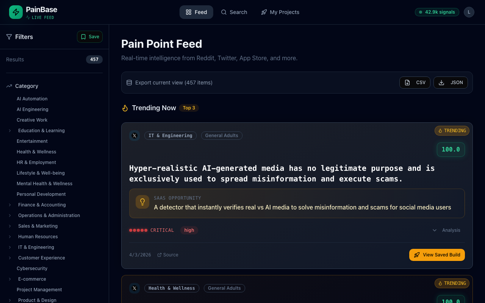
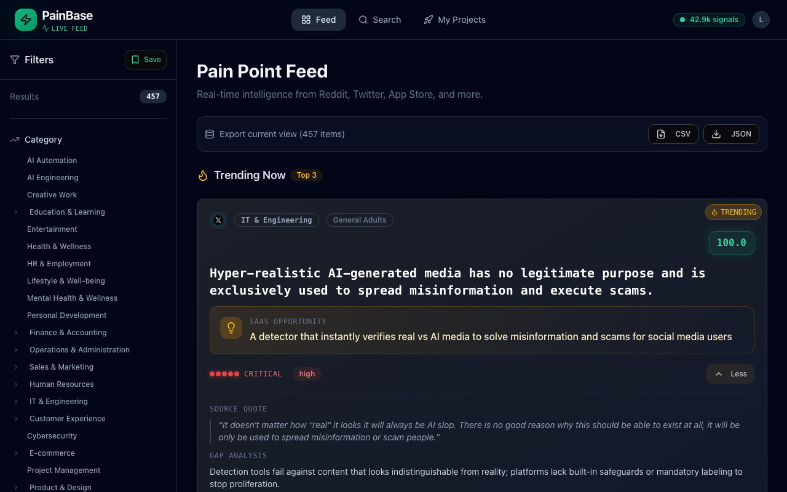
She checks source transparency before trusting the score. The analysis panel gives her a source quote, gap analysis, and a direct source URL, which is exactly the evidence ritual a high-trust workflow requires.
The structure is useful, but the analysis is only brief directional text. For Elena, who needs founder-facing validation assets, this does not yet answer frequency, competitive landscape, addressability, or why existing solutions fail.
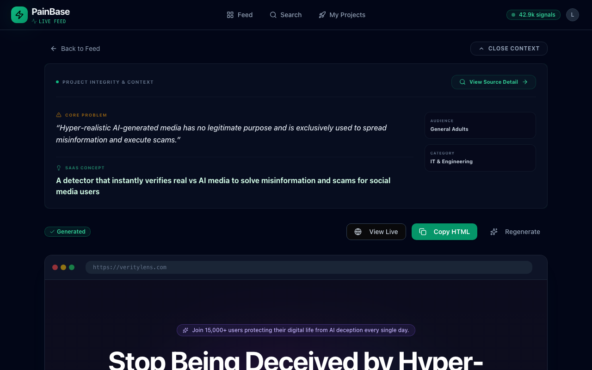
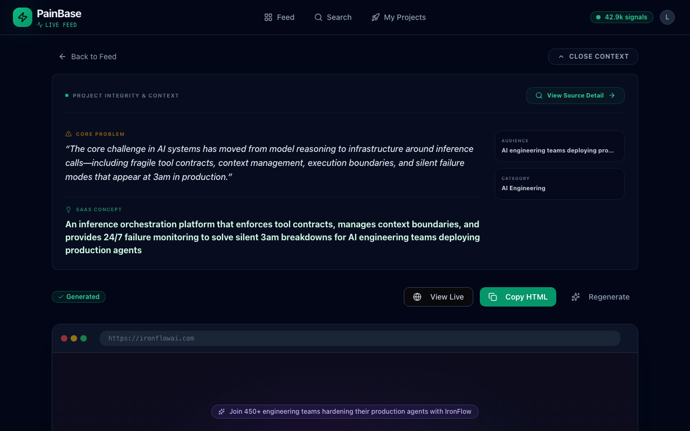
The full landing page output changes the evaluation. Elena sees hero copy, features, pricing, FAQ, testimonials, and Copy HTML. This is a tangible artifact she could hand to a founder or analyst as a starting point.
The same polish that makes the artifact impressive also creates risk. Fabricated testimonials, names, and pricing can look like real validation evidence unless clearly marked as AI-generated placeholders.
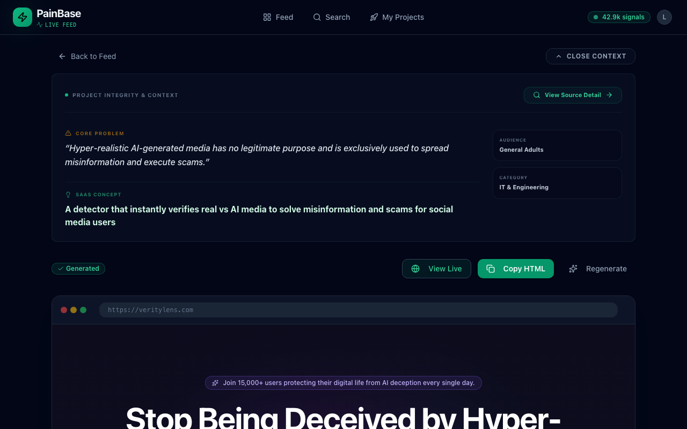
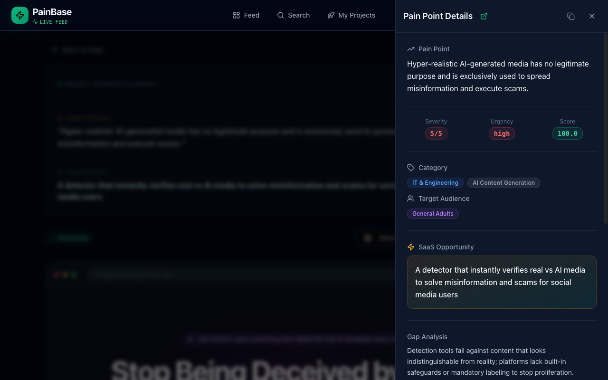
The preview is visually useful, but Elena still needs to know whether the domain-like URL is hosted, suggested, or just placeholder copy. Copy HTML helps, but the share/deploy path is still not explicit enough for founder handoff.
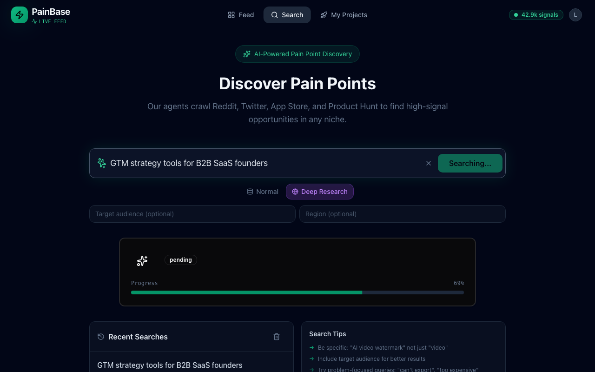
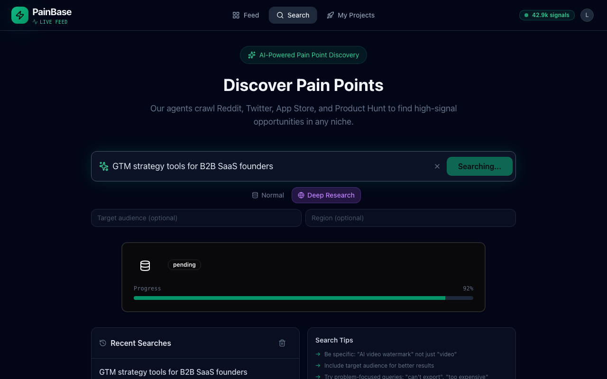
Deep Research gets stuck at 92% after multiple waits. The cancel attempt does not recover the interface. For Elena, this undermines the repeatability promise because she cannot run multiple searches per session with confidence.
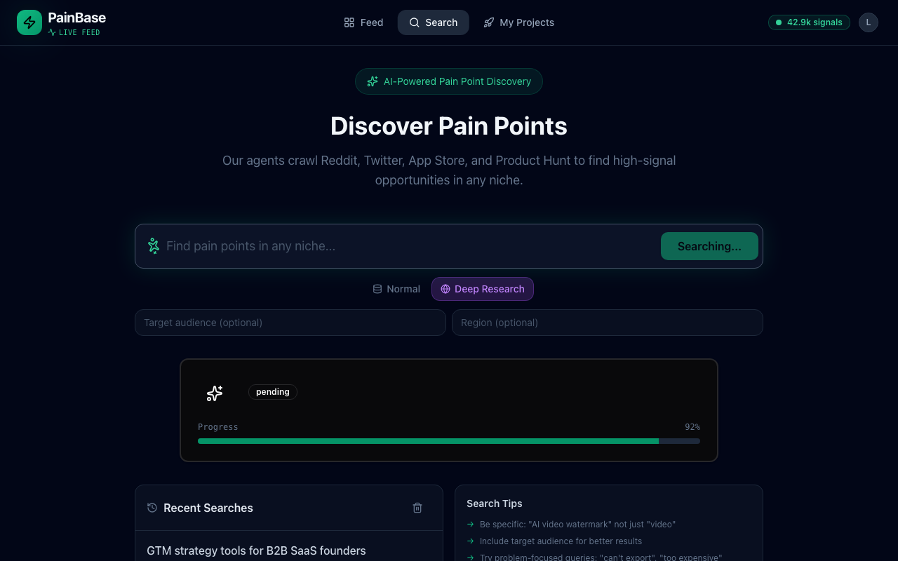
When Deep Research cannot be recovered, Elena pivots to My Projects to salvage the evaluation. This is realistic behavior: a power user will look for another path, but the broken primary path still damages willingness to rely on the tool.
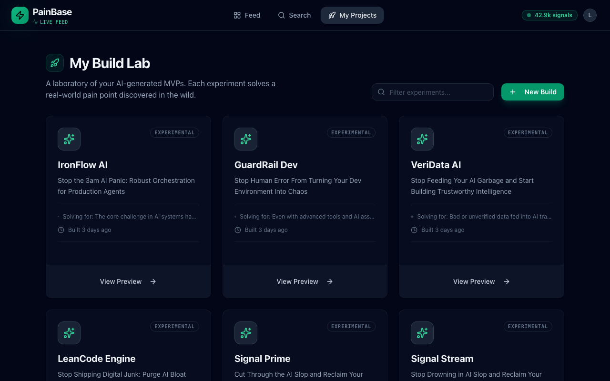
Saved projects prove persistence, but the workspace looks like a flat solo-user lab. Elena does not see folders, founder tags, statuses, owner assignment, batch export, or collaboration controls.
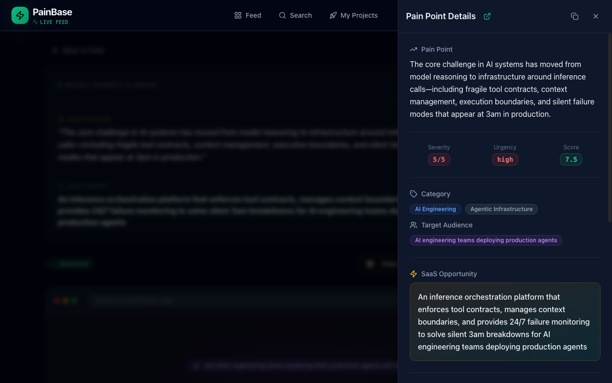
The final state gives Elena a complete evidence chain: real source URL, structured pain point, related signals, generated MVP page, and export path. That is enough to prove the product has real value, even though reliability and trust labeling need work.